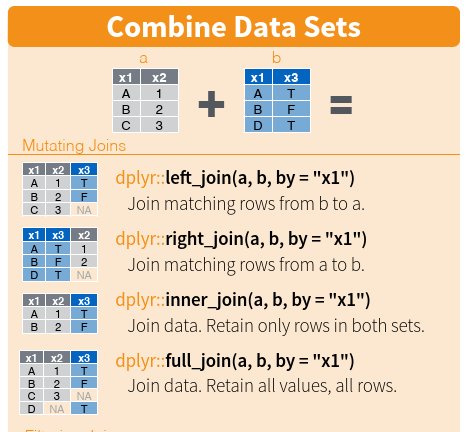
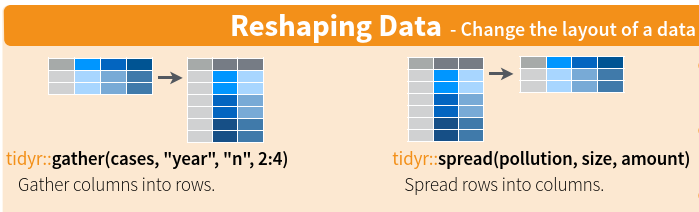

Download the script here
Solutions can be downloaded here - but try to solve everything without the solutions first!
We use an old (2003) randomly changed and subsetted SOEP dataset with ~4.600 observations.
Please, download the two csv files (.soep_europ.csv and soep_us.csv) and the soep.dta file and save them locally within your R project directory.
rm(list=ls()) in the beginning.dplyr package and its functions (or verbs as they are often called in dplyr terminology).This is how the beginning of every of your scripts should look like: 1. Clean environment and 2. load packages
rm(list = ls())
# install.packages("tidyverse")
library(tidyverse)Step 1 of Data Management is about “reading” the data into the R environment. There are many different file types and with R you can open all of them.
Here, we’ll focus on two file types (csv and dta). Different data files require different approaches but - as always - information can be easily accessed in the CRAN documentation/stackoverflow.
Let’s first open the csv file “soep_europ.csv”.
Remember:
You have to write down the path where the file is saved relative to the root.directory of your RProject.
A good rule of thumb is to save all your data in a separate “data” folder within your R environment: E.g. “data/soep_europ.csv”
Don’t use the backslash but always the forward slash(/).
In the follwing, we will read and save the practice data as data. Don’t forget - everything in R is an object. Therefore, we could have used every name for the data frame we want. Instead of data, we could have also called it isg, RisGreat, or blaBlablaBla345. The names don’t matter!
Task Complete the empty spaces!
data <- read.csv("_______") # Looks weird....What happened: In (most) European countries the standard way to save csv/excel files is to separate values by “;” and the decimals by “,”.
In the US and many other countries separation is done by “,” and the decimals are marked by “.”. This is the default for read.csv.
To read the data correctly, we have to add the argument “sep” to the function.
Task Complete the empty spaces!
data <- _____("data/soep_europ.csv", sep="_____") # 2 Addenda:
Task 1. Try out to to read a US style csv with soep_us.csv
data <- read_csv2() from the tidyverse. (Accordingly, read_csv() is for US style csv files)Task Use read_csv2() to read soep_europ.csv
data <- However, R being R, you can also read many other file formats. Let’s try out some of them. As a second data file type, we try to read .dta (Stata’s proprietary file format)
For Stata’s .dta file, we can use the haven package (part of the tidyverse but not loaded through library(tidyverse)).
packagename::function.data <- haven::read_dta("data/soep.dta")Same for SPSS files:
data <- haven::read_sav("data/soep.sav")We can also read excel (e.g. .xls and xlsx) files. These functions are part of a different package from the tidyverse.
data <- readxl::read_xlsx("data/soep.xlsx")Enough on reading data for now, let’s use the European csv for now.
data <- read_csv2("data/soep_europ.csv")Before getting into the woods of data management, let’s understand the pipe first. The Pipe %>% operator stems from the magrittr package (which in turn is part of the tidyverse - therefore it is already loaded.
The Pipe operator pipes the last element of something into the first one of the next: f(x) becomes x %>% f().
To give an example:
mean(c(1:5))
# can be expressed with the pipe as
c(1:5) %>%
mean()We will always use the pipe in the following subsections.
Our data has 902 variables. Obviously, we do not need that many.
Accordingly, we select the relevant ones:
Task Complete the empty spaces! Notice that after typing the first two or three characters of each variable, RStudio gives you a drop down menu.
data <- data %>% # remember the pipe?
select(______) # fill in the missing namesselect() is from the tidyverse, namely the package dplyr. “dplyr is a grammar of data manipulation, providing a consistent set of verbs that help you solve the most common data manipulation challenges.” For more information about dplyr, check this out.
For a first overview over our data, we can use the base functions (e.g. those which are without any package installations part of R) str(), head(), summary(), table(), quantile(), and View().
Task Go through every function’s output and try to understand what it means!
str(data)
head(data)
summary(data)
table(data$tp72) # you could use any other variable here.
quantile(data$tp72, na.rm = TRUE)
View(data)The dataset is from 2003. Compute the age accordingly by creating the new variable age
Task Complete the empty spaces!
data$age <- 2003 - _____There is also a dplyr way to do this: mutate().
Task Complete the empty spaces!
data <- ______ %>%
mutate(age = ______)If you only want to keep certain rows (observations) in which values of a variable match a certain criterion, you can filter().
Let’s say, we only want to keep those observations which are at least 18.
Task Complete the empty spaces!
data <- data %>%
filter(____ >= _____)Note for later (see Filtering II): When we filter for exactly one condition, we use == (or operators like >=). When we filter for a string, we use %in%.
Sometimes, we want to order data. We do so with arrange(). desc(x) sorts x in descending order.
Task Sort the data frame by age!
# Example 1
data <- _____ %>%
_____(desc(___)) By the way, we could have done all of this in one batch:
Task Complete the empty spaces!
data <- read_csv2("data/soep_europ.csv") # read data again.
data <- data %>%
select(hhnr, persnr, gebjahr, sex, tp72, tp7001, tp7003 , tp0301, tp0302, tp7602) %>%
mutate(age = 2003-_____) %>%
filter(______) %>% # only those who are at least 18
_____(____(____)) # Arrange the dataframe so that age is displayed in descending orderGreat, by now you basically have the main logic of dplyr at hand. In the sections below, we simply introduce some more dplyr functions and expand the functionality a bit.
Often, we will want to recode single observations within a variable. recode() is the dplyr verb for this operation (see below).
Furthermore,note that within mutate() (and any other dplyr verb) you can easily apply more than one operation (on the same variable) at once in a tidy way. For example, let’s say we
recode the binary variable tp72 (Work Overtime) into three levels:
Task Complete the empty spaces!
data <- data %>%
mutate(
over = recode(
tp72,
"3" = 0, #actually means Does not apply: Self-Employment
"-2" = 0, # actually means does not apply
"-1" = 0, # actually means no answer
.default = tp72
),
over = over * 10,
netinc = ____(
_____,
"-3" = NA_real_, # remember the difference between integer and double?
"-2" = NA_real_,
"-1" = NA_real_,
.default = _____
)
)Several things to note here:
mutate() we can - in a tidy way - work on multiple variables (e.g. over and netinc)Let’s check whether the data manipulation worked:
table(data$over)
table(data$over,
useNA = "always") # we add the argument useNA in order to also get the number of NA values. As we have practiced before, we can factorize variables. This is also possible within the dplyr world (mutate() again). Let’s do that for sex.
Task Complete the empty spaces!
_____ <- _____ _____
____(sex = factor(
sex ,
levels = c(1, 2),
labels = c("male", "female")
))We can also recode values below a certain threshold at once (if it is numeric (either double or integer)):
if_else(condition, true, false)
data <- data %>%
mutate(
contract =
if_else(condition = tp7001 < 0,
true = NA_real_,
false = tp7001),
actual =
____(__________________________________),
contract = contract / 10,
actual = _______________
)cases_when() allows us to apply multiple if_else() statements.
Let’s say, we want to build a character variable inc.quant which indicates the quantile() (see above) of netinc.
Task Complete the empty spaces!
data <- data %>%
mutate(
inc.quant = case_when(
netinc < quantile(netinc, na.rm = TRUE)[2] ~ "Q1",
netinc >= quantile(netinc, na.rm = TRUE)[2] &
netinc < quantile(netinc, na.rm = TRUE)[3] ~ "Q2",
netinc >= quantile(netinc, na.rm = TRUE)[__] &
netinc < _______(netinc, na.rm = TRUE)[__] ~ "Q3",
netinc ______________________________________
)
)head(data)
summary(data)Again, we could have done all of this in one batch - but it would have been untidy…
data <- read_csv2("data/soep_europ.csv")
data <- data %>% # remember the pipe?
select(hhnr, persnr, gebjahr, sex, tp72, tp7001, tp7003 , tp0301, tp0302, tp7602)%>%
mutate(age = 2003-gebjahr) %>%
filter(age>=18) %>%
arrange(desc(age))%>%
mutate(
over = recode(
tp72,
"3" = 0, #actually means Does not apply: Self-Employment
"-2" = 0, # actually means does not apply
"-1" = 0, # actually means no answer
.default = tp72
),
over = over * 10,
netinc = recode(tp7602,
"-3" = NA_real_,
"-2" = NA_real_,
"-1" = NA_real_
),
sex = factor(
sex ,
levels = c(1, 2),
labels = c("male", "female")
),
contract =
if_else(condition = tp7001 < 0,
true = NA_real_,
false = tp7001),
actual =
if_else(condition = tp7003 < 0,
true = NA_real_,
false = tp7003),
contract = contract / 10,
actual = actual / 10,
inc.quant = case_when(
netinc < quantile(netinc, na.rm = TRUE)[2] ~ "Q1",
netinc >= quantile(netinc, na.rm = TRUE)[2] &
netinc < quantile(netinc, na.rm = TRUE)[3] ~ "Q2",
netinc >= quantile(netinc, na.rm = TRUE)[3] &
netinc < quantile(netinc, na.rm = TRUE)[4] ~ "Q3",
netinc >= quantile(netinc, na.rm = TRUE)[4] ~ "Q4"
)
)Great job! We are almost done.
Below we’ll QUICKLY introduce a few more functions.
Summarize allows us to summarise certain variables, such as certain features of age
data %>%
summarize(mean = mean(age, na.rm = TRUE),
sd = sd(age, na.rm = TRUE))The same is also possible for grouped structures. Say, for example, you would want to calculate separate values for different genders:
data %>%
group_by(sex) %>%
summarise(mean = mean(age, na.rm = TRUE),
sd = sd(age, na.rm = TRUE)) A bit more nuanced: Let’s say you want to create a variable cohort.deviance which gives you the deviation in netinc from the mean of all people of the same age. To do this, you first have to group by age (remember the dplyr verb?) and then subtract the mean of netinc from every single netinc value.
Task Complete the empty spaces!
data <- data %>%
_________ %>%
mutate(cohort.deviance = netinc - ______(_______, na.rm = TRUE)) As explained above, there are different types of filtering operations.
Let’s say, you only want to keep those observations which are older than 18 and who are in the top three income quintiles. We store this in data2
Task Note the difference between the lines of inc.quant and sex!
data2 <- data %>%
filter(age > 18,
inc.quant %in% c("Q2", "Q3", "Q4"),
sex == "male")When we filter for exactly one condition, we use == (or >, <, >=, <=). When we filter for a string, we use %in%.
Assuming, we forgot to include the variable “tp0101” (Satisfaction With Health) in our dataset when we selected all the variables we want to work with above. Of course, the normal/efficient way would be to go back the select() operation above, include persnnr and rerun the whole code. For the sake of learning let’s ignore this possibility. Instead, we reread the SOEP data under a different name, merge the relevant variables from this data.frame with the one we have been working with all the time and create a new data.frame (data2).
data.origin <- read_csv2("data/soep_europ.csv")
data2 <- data %>%
left_join(data.origin[,c("hhnr", "tp0101")], by=c("hhnr"))Dplyr offers four different ways to joining two data sets - see screenshot from the dplyr cheat sheet (again, cheat sheets are amazing) below:

Second, you might have noticed when looking at the environment that data2 has ~900k rows. Obviously, something didn’t work. The culprit lies with the variable to join both data.frames: hhnr. hhnr contains many duplicates because often more than one member (persnr) from one household participated in the survey. We can check this with any(duplicated(data$hhnr)).
We therefore need a second variable to join them by. In our case, this second variable is persnr.
Task Complete the empty spaces!
data <- data %>%
left_join(data.origin[,c("hhnr", "tp0101", ____)], by=c("hhnr", ______))The last section for now!
A reminder of the difference between long and wide data:
Often, we want to be able to switch between long and wide data. Dplyr has two easy functions: spread() and gather()

At the moment, our data is in wide format (e.g. all the variables are in separate columns). Suppose, we would want to make the data long:
data.long <- data %>%
gather(key=key, value = value, -c(hhnr, persnr))Task Can you make data.long wide again?
data.wide <- data.long %>%
spread(key=____, value=______)